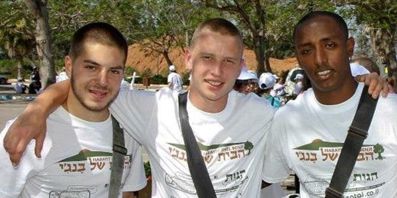
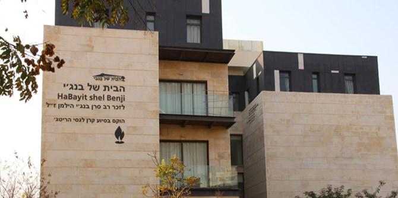
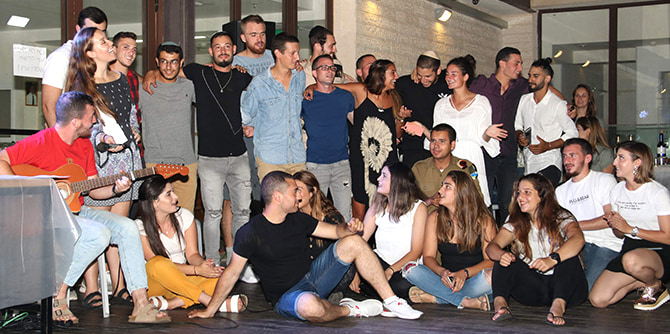

בצה"ל משרתים כ-1,250 חיילים קרביים בודדים. רבים מהם הגיעו מחו"ל, ואחרים אינם מקבלים תמיכה ממשפחותיהם בישראל. הבית של בנג'י הוקם כדי לדאוג לכך שחיילים, המסכנים את חייהם מדי יום בהגנה על מדינת ישראל, לא יחזרו משבוע מפרך של שירות צבאי לבית ריק, עם מדים הזקוקים לכביסה, מקרר ריק וחשבונות שאין באפשרותם לשלם.
הבית נוסד לזכרו של בנג'י הילמן, מ"פ בצה"ל, יליד בריטניה, שנהרג במלחמת לבנון השנייה. מאז הקמתו ב-2013, הבית של בנג'י היה ביתם של 360 חיילים בודדים, וממשיך את מורשתו של הילמן בדאגה לחיילים הבודדים. הבית נמצא ברעננה ומספק לחיילים קרביים בודדים סיוע בכל האתגרים שהם נתקלים בהם ובצרכים המתעוררים – במהלך שירותם בצה"ל ולאחריו.

כיום מתגוררים בבית של בנג'י 87 חיילים בודדים, והם מקבלים שלוש ארוחות ביום, כביסה נקייה, פינה לעצמם, הכוונה של מומחים ותמיכה "משפחתית" 24 שעות ביממה, 7 ימים בשבוע. זאת בזכות המאמצים של הצוות המסור של הבית ורשת של מתנדבים מהקהילה. הבית מספק גם הכוונה לחיילים בודדים במעבר לחיים אזרחיים לאחר שירותם הצבאי. עד היום סייע הבית ליותר מ-2,000 חיילים בודדים למצוא תעסוקה, דירה, ריהוט ומלגות לימודים לאחר שירותם הצבאי.
נגיף הקורונה שינה הכול עבור הבית של בנג'י. הבית מצא עצמו לפתע מתמודד עם קשיים שמעולם לא התמודד עמם בעבר. החיילים המתגוררים בו נעשו פגיעים יותר – פיזית ורגשית – ומערכת התמיכה הכספית של הארגון החלה להיסדק. הסגרים החוזרים ונשנים גרמו לצמצום בכמות הציוד שנתרם לבית ומנעו את בואם של המתנדבים התורמים מזמנם.
כחלק מההירתמות של קרן מנדל לסיוע בתקופת הקורונה בישראל, קיבל הבית של בנג'י שני מענקים שאפשרו לו להמשיך לתמוך בחיילים הבודדים לאורך כל המשבר. כאשר תרומות המזון החודשיות הגדולות שמסייעות להאכיל את החיילים פסקו מלהגיע בתקופות הסגר, התמיכה הכספית של קרן מנדל אפשרה לבית לרכוש מזון לחיילים שהצליחו לחזור לדירותיהם, ולהכין חבילות עבור חיילים שנתקעו בבסיס במשך חודשים ארוכים.

המענקים של קרן מנדל סייעו לבית של בנג'י גם לפצות על העובדה שרוב המתנדבים בו לא הצליחו להגיע בתקופות הסגר – דבר שהשפיע על מצבת כוח האדם בבית. הסיוע הכספי אפשר לבית להעסיק איש צוות נוסף במשמרות הלילה, שכללו את ניהול דלפק הקבלה, פיקוח על המטבח ונוכחות של תורן לאורך כל הלילה, למקרה שחייל זקוק לעזרה דחופה. המענקים אפשרו לבית גם לרכוש ציוד רפואי, כולל מסכות, חומרי חיטוי ומדי חום, וכן לקיים אירועים קטנים בסופי השבוע, כאשר חיילים חזרו הביתה מהצבא אך לא היה להם מה לעשות, מכיוון שמקומות הבילוי היו סגורים.
למענקים של קרן מנדל היה תפקיד חיוני, שאפשר לבית של בנג'י לעמוד באתגרים הייחודיים של משבר הקורונה. שאול רורקה, המנכ"ל והמייסד של הבית, הביע את תודתו על תמיכתה הקרן ב-2020 וב-2021: "חיילים קרביים בודדים מסרו את חייהם כדי לסייע למדינה; המעט שנוכל לעשות הוא להציע להם בית ראוי ומשפחה אוהבת. אנו אסירי תודה לקרן מנדל על שעזרה לנו לעמוד לצד חיילינו בתקופה שבה הם היו זקוקים לנו יותר מכול." הבית של בנג'י מקים בימים אלו בית נוסף לחיילים בודדים, ליד הבית הראשון.
{kind=link}
{kind=link}
{kind=link}